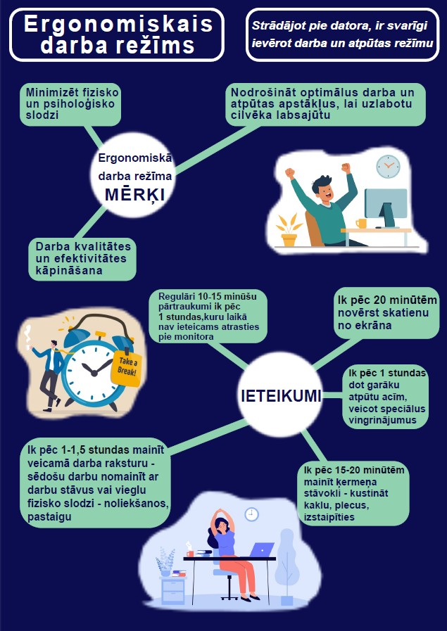

Ergonomiska darba režīma mērķi ir kāpināt darba ražīgumu, uzlabot strādājošo efektivitāti un pašsajūtu.Vienas no raksturīgākajām datoru lietotāju sūdz''ibām ir redzes diskomforts,velkošās sāpes mugurā un psiholoģiskā spriedze,kas izraisa vispārējo nogurumu.
Darba process jāplāno tā, lai mainītos veicamā darba raksturs, piemēram, sēdošu darbu ieteicams pēc kāda laika nomainīt ar darbu stāvus vai darbu, kas prasa fizisku piepūli.
Kustības:
Ja dažādu apstākļu dēļ šāda veida darba organizācija nav iespējama (piemēram, intensīva datu ievadīšana, datu nolasīšana no ekrāna u.tml.), nepieciešams ievērot regulārus pārtraukumus, kas ieskaitāmi darba laikā.
Ieteikumi ergonomiskam darba režīmam:
Ja nav laika biežiem pārtraukumiem, vieglus vingrinājumus var veikt, sēžot pie datora galda! 😊
